1 / 11
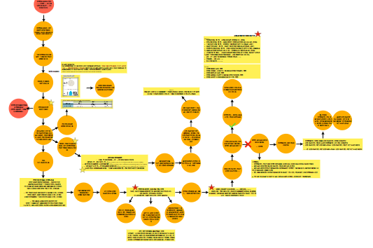
문제정의 개요
2 / 11
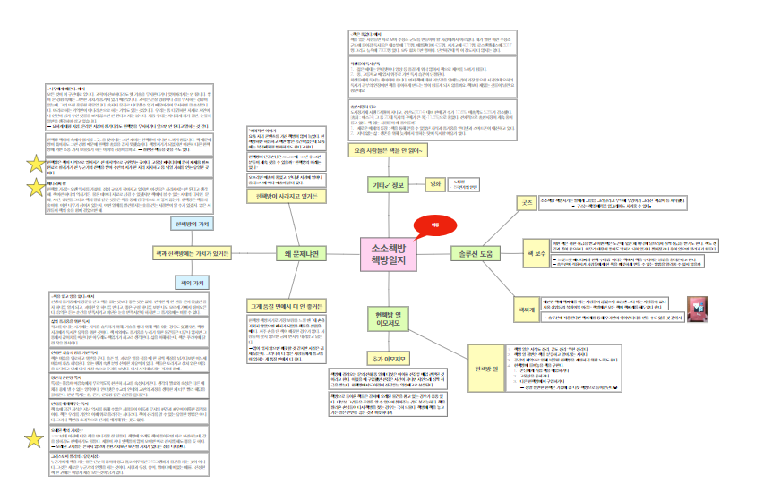
헌책방관련 서적조사
4 / 11
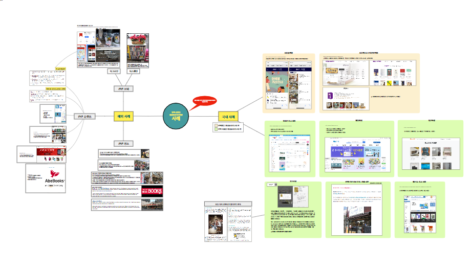
솔루션아디이어 유사사례분석
5 / 11
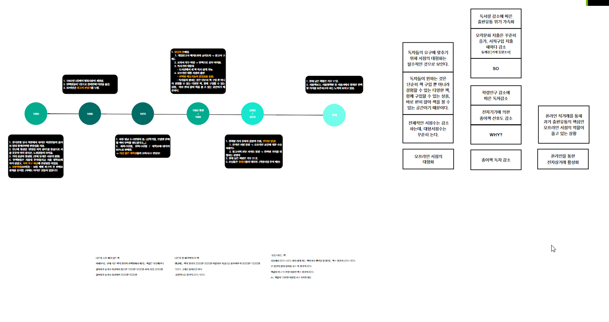
헌책방관련 역사조사
6 / 11
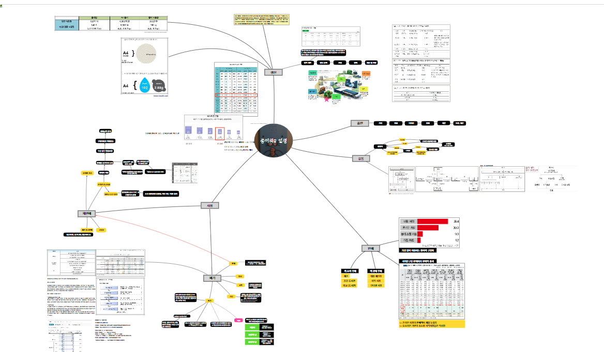
책의 생산부터 폐기까지의 일생 조사
7 / 11
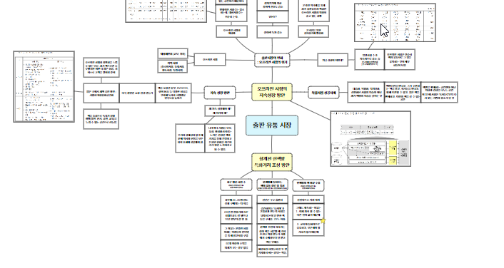
출판시장 탐구
8 / 11
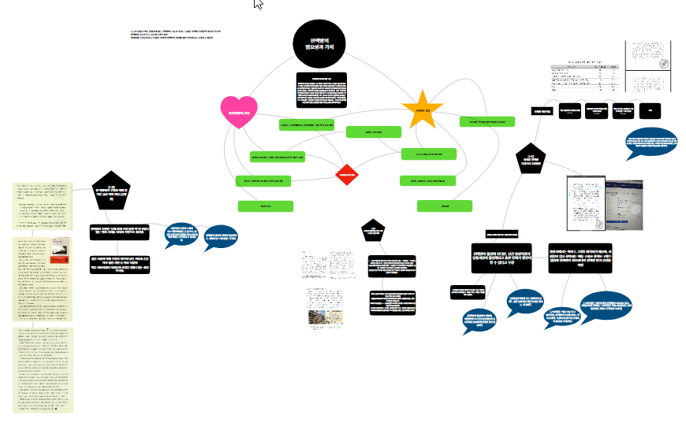
헌책방의 필요성과 가치
9 / 11
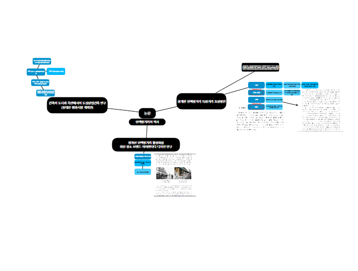
헌책방관련 논문조사
10 / 11
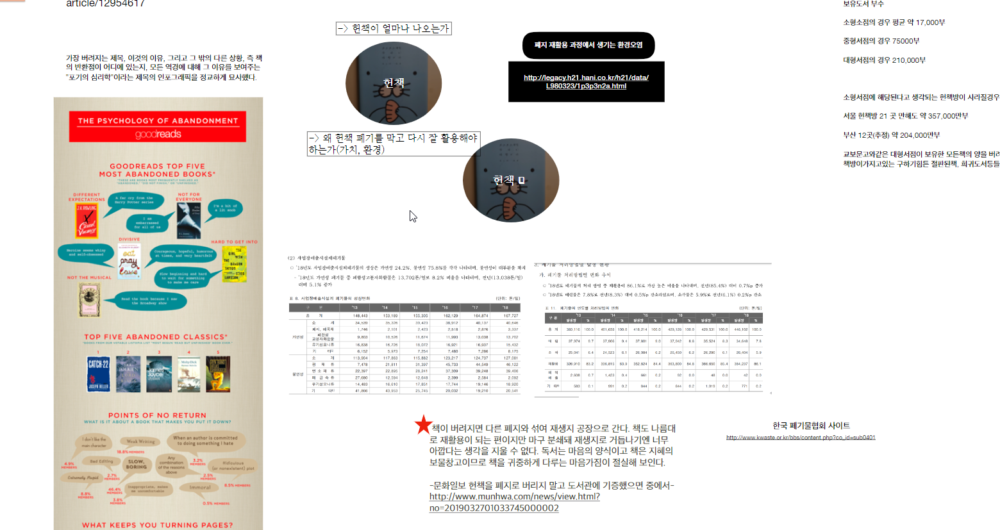
중고서적이 버려지는 양 데이터 조사
11 / 11
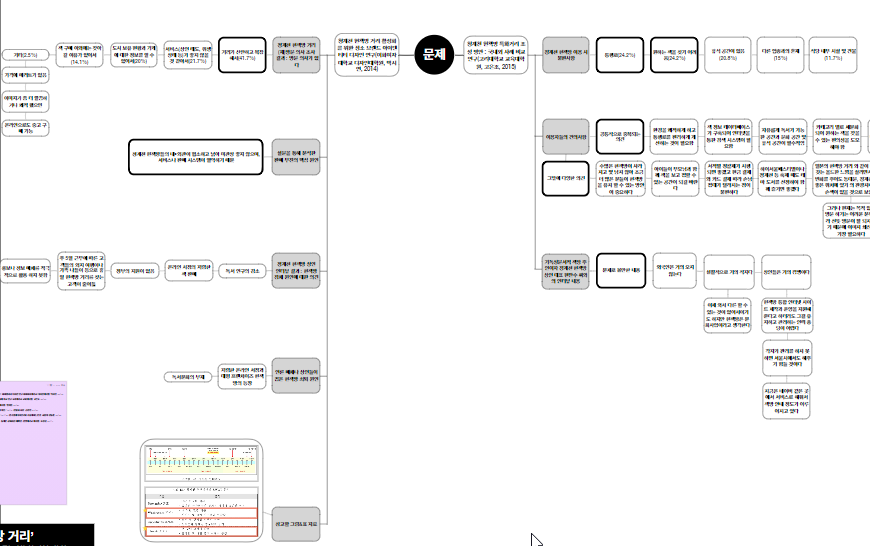
헌책방의 문제점 조사
12 / 11
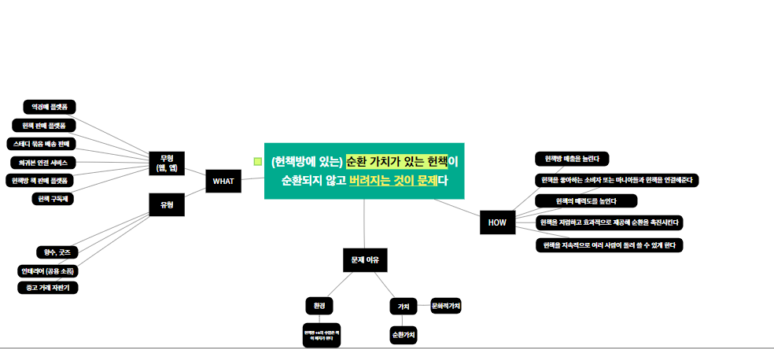
문제정의 정리
13 / 11
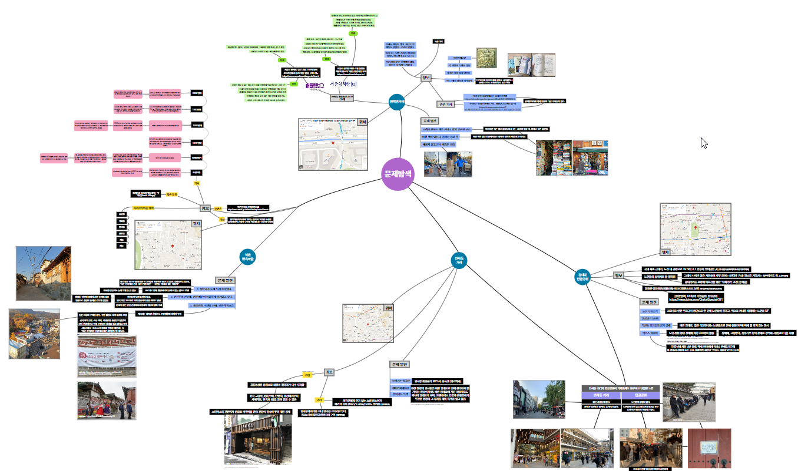
문제탐색을 위한 답사
14 / 11
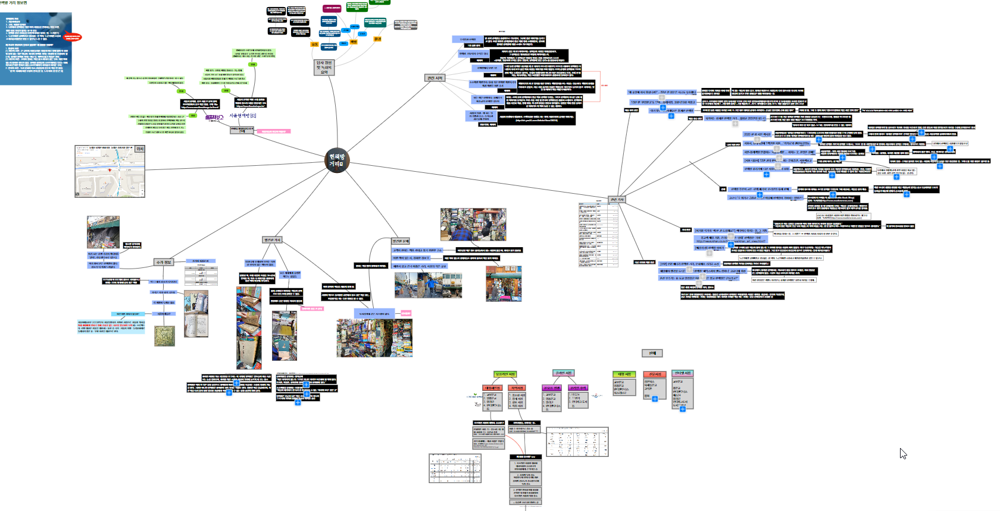
헌책방 거리 답사 및 조사구조화
15 / 11
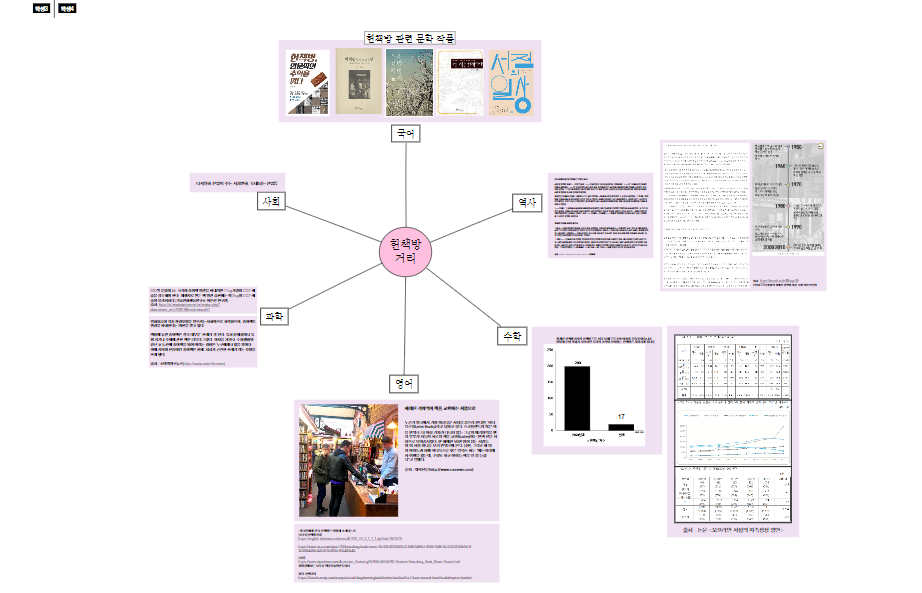
헌책 주제와 교과 과목 연결및 탐구